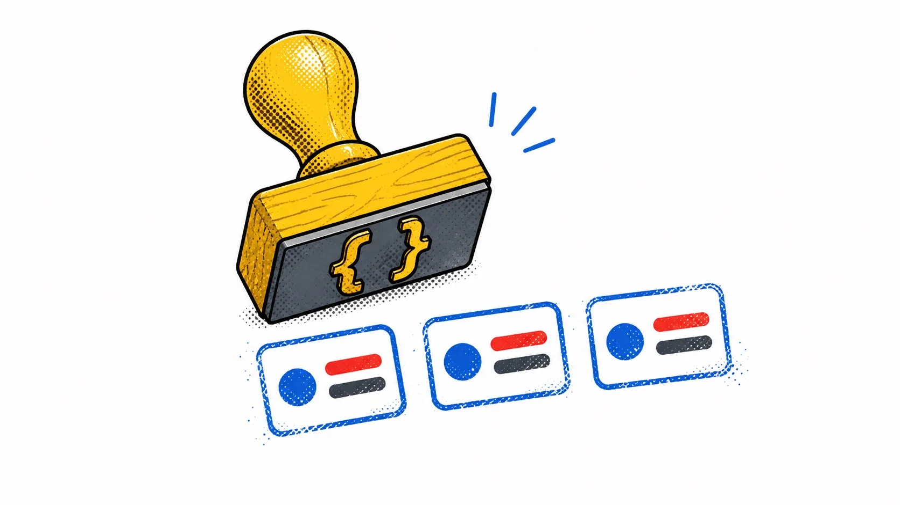

Chapter 06 · Reusable Markup
Snippets
Svelte 4's slots — default, named, scoped — are gone in Svelte 5, replaced by one general-purpose idea: a snippet is a chunk of markup you declare once and stamp out wherever, however many times, with parameters like a function.
{#snippet listItem(item)}
<li class="row">{item.name} — ${item.price}</li>
{/snippet}
<ul>
{#each cart as item}
{@render listItem(item)}
{/each}
</ul>Declare it with {#snippet name(params)}…{/snippet}, stamp it
with {@render name(args)}. Parameters work like a function's — defaults,
destructuring, as many as you need. Nothing here is magic: a snippet is close kin to a plain function that
returns markup.
The children snippet — slots' real replacement
Content you place between a component's tags — without declaring it as a
named snippet — implicitly becomes that component's children prop.
<!-- Card.svelte -->
<script>
let { title, children } = $props();
</script>
<div class="card">
<h3>{title}</h3>
{@render children()}
</div><Card title="Ship it">
<p>Anything here becomes <code>children</code>.</p>
</Card>Because children might not be passed, guard the render with optional
chaining — {@render children?.()} — or wrap it in
{#if children} to show fallback content instead.
Named snippets as props
A component can accept more than one region of markup — declare named snippets inside the component's tags and Svelte passes each one as a prop with that name, no plumbing required on your part.
<Table data={rows}>
{#snippet header()}
<th>Name</th><th>Price</th>
{/snippet}
{#snippet row(item)}
<td>{item.name}</td><td>{item.price}</td>
{/snippet}
</Table>Inside Table.svelte: let { data, header, row } = $props(),
then {@render header()} and {@render row(item)} wherever they
belong.

A bold, playful editorial zine illustration: a wooden rubber stamp with a curly-brace glyph carved into its face, mid-stamp, printing three identical small card-shaped icons in a row onto a white page, each print slightly offset like a real ink stamp. Flat vector style, hand-inked outlines, halftone dot shading, strict palette of yellow, blue, red and charcoal gray only, generous whitespace, no text baked in. Target ~1280x720px, 16:9 landscape; compose for a small on-page figure with the subject centred and safe margins — it is letterboxed into a 16:9 box, so keep nothing important near the edges.
Generate with your image agent, then drop the file here.
{@render (cool ? coolSnippet : lameSnippet)()}. That's also how
Svelte replaced scoped slots: the snippet's parameters are the "slot props."
Try it
Write a badge(label, tone) snippet that renders a colored pill, then
{@render badge('new', 'yellow')} it three times with different args in the same
page. One declaration, three independent stamps.
The mental shift that unlocked this for me: stop thinking "slot," start thinking "parameterized markup I can call like a function." Everything else — named slots, scoped slots, the default slot — falls out of that one idea.